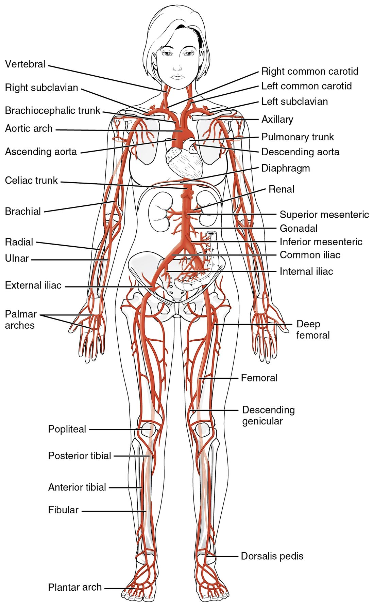

The major systemic arteries
Every systemic artery branches from the aorta, which rises as the ascending aorta, curves as the aortic arch and descends through the chest and, past the aortic hiatus, the abdomen.
Part 1 · Clinical hook
Why this matters
A 58-year-old man slumps over at a bus stop. The first EMT on scene kneels, slides two fingers into the groove beside his windpipe, and feels for the carotid pulse. In ten seconds she has to decide whether his heart is still pushing blood, and her answer depends on knowing exactly where that artery runs.
Part 2 · Foundations
What this builds on
Part 3 · Prerequisite check
Quick check before you start
1. Which great vessel carries blood out of the left ventricle?
- Pulmonary trunk
- Aorta
- Superior vena cava
Show the answer
The left ventricle ejects into the aorta through the aortic valve. The pulmonary trunk leaves the right ventricle, and the superior vena cava brings blood into the right atrium.
- Pulmonary trunk:
- Correct: Aorta:
- Superior vena cava:
2. The aorta and its largest branches have a thick layer of elastic fibers in the tunica media. What does that elastic tissue do with each heartbeat?
- It stretches as blood is ejected, then recoils
- It contracts to pump blood forward
- It stops blood leaking through the wall
Show the answer
Elastic arteries stretch when the ventricle ejects blood and recoil between beats. The stretch travels down the arteries as the pulse. Smooth muscle, not elastic tissue, is what contracts.
- Correct: It stretches as blood is ejected, then recoils:
- It contracts to pump blood forward:
- It stops blood leaking through the wall:
3. What is an anastomosis?
- A narrowing inside an artery
- A connection between vessels that gives blood a second route
- A valve inside a vein
Show the answer
An anastomosis joins two vessels, so if one route is blocked, blood can still reach the tissue by the other.
- A narrowing inside an artery:
- Correct: A connection between vessels that gives blood a second route:
- A valve inside a vein:
Part 4 · Anatomy panel
Anatomy

With labels hidden, select a box to reveal its label.
Part 5 · Causal chain
How it works, step by step
- The left ventricle ejects its stroke volume into the ascending aorta.The elastic wall of the aorta stretches outward.
- The stretched section of wall recoils and pushes on the blood and wall just ahead of it.The bulge moves along the arteries as a pressure wave, several meters per second, far faster than the blood itself.
- The wave reaches an artery that runs close to the skin over bone, such as the radial artery at the wrist.The artery wall pushes outward against a fingertip pressing it onto the bone, and you feel a pulse.
- Each beat that ejects enough blood sends one wave.Counting the pulse for a set time gives the heart rate, and a pulse that is missing or weak points to low pressure or a blocked or squeezed artery upstream.
Part 6 · Key ideas
Key ideas
- The descending aorta runs down in front of the spine from the end of the aortic arch. It is the thoracic aorta in the chest and, below the diaphragm, the abdominal aorta, which ends near your navel by splitting into two branches, each a common iliac artery.
- The brachiocephalic trunk (brachi- = arm, cephal- = head) is a short vessel off the aortic arch that splits into the right subclavian artery and the right common carotid artery. There is no left trunk: the left common carotid artery arises straight from the arch.
- The cerebral arterial circle (circle of Willis) is a ring of arteries around the base of the brain. It is an anastomosis, a connection between arteries that gives blood a second route if one internal carotid artery narrows.
- The celiac trunk (celi- = belly) is a vessel about 1 cm long that comes off the abdominal aorta and splits at once into three branches, to the stomach, the spleen and the liver.
- Each time your left ventricle ejects blood, the aorta's wall bulges and a wave of pressure runs down every artery: the pulse. Pulse points are places where an artery runs close to the surface over something firm and you can feel it, such as the carotid pulse at your neck.
Part 7 · Core concept
Core concepts
Part 8 · Misconception
A common mistake
The wrong idea: Each side of the aortic arch branches the same way: a trunk on the left matches the brachiocephalic trunk on the right.
What actually happens: Only the right side has a brachiocephalic trunk. It splits into the right subclavian and right common carotid arteries. On the left, the common carotid and subclavian arteries leave the arch directly, so the arch has three branches, not four.
Part 9 · Retrieval check
Check yourself
Anything you miss goes into your review queue.
1. Name the pinned artery.
- Right common carotid artery
- Brachiocephalic trunk
- Right subclavian artery
- Ascending aorta
Show the answer
The brachiocephalic trunk (brachi- = arm, cephal- = head) is the first and largest branch of the aortic arch. It exists only on the right and splits into the right subclavian and right common carotid arteries.
- Right common carotid artery: The right common carotid artery is one of the two branches the pinned vessel splits into. It runs up the neck from the end of the trunk.
- Correct: Brachiocephalic trunk: Correct. The brachiocephalic trunk serves both the right arm and the right side of the head, which is what its name says.
- Right subclavian artery: The right subclavian artery is the other branch the pinned vessel splits into. It heads out under the clavicle toward the arm.
- Ascending aorta: The ascending aorta is the part of the aorta below the arch. Its only branches are the coronary arteries.
2. Put the vessels in order to trace blood from the aortic arch to the pulse at the right wrist.
- Aortic arch
- Brachiocephalic trunk
- Right subclavian artery
- Right axillary artery
- Right brachial artery
- Right radial artery
Show the answer
From the aortic arch, the right arm is served through the brachiocephalic trunk, which gives the right subclavian artery. That one tube is renamed axillary at the outer edge of the first rib and brachial below the armpit, then splits in front of the elbow into the radial and ulnar arteries. The radial artery carries the wrist pulse.
- Correct order: 1. Aortic arch 2. Brachiocephalic trunk 3. Right subclavian artery 4. Right axillary artery 5. Right brachial artery 6. Right radial artery
3. A student traced blood from the heart to the top of the left foot. One step is wrong. Which one?
- Right ventricle into the ascending aorta
- Aortic arch into the thoracic aorta
- Abdominal aorta into the left common iliac artery
- Left common iliac artery into the left external iliac artery
- Left femoral artery into the left popliteal artery
- Left anterior tibial artery into the left dorsalis pedis artery
Show the answer
The aorta leaves the left ventricle. The right ventricle pumps into the pulmonary trunk, toward the lungs.
- Correct: Right ventricle into the ascending aorta: This is the error. The ascending aorta leaves the left ventricle through the aortic valve; the right ventricle feeds the pulmonary trunk.
- Aortic arch into the thoracic aorta: This step is right. The arch continues as the descending aorta, whose chest part is the thoracic aorta.
- Abdominal aorta into the left common iliac artery: This step is right. The abdominal aorta ends at about L4 by splitting into the right and left common iliac arteries.
- Left common iliac artery into the left external iliac artery: This step is right. The external iliac artery carries blood toward the leg and becomes the femoral artery under the inguinal ligament.
- Left femoral artery into the left popliteal artery: This step is right. The femoral artery is renamed popliteal behind the knee.
- Left anterior tibial artery into the left dorsalis pedis artery: This step is right. The anterior tibial artery becomes the dorsalis pedis artery at the ankle.
4. Select every artery that leaves the abdominal aorta as a single, unpaired branch.
- Celiac trunk
- Renal artery
- Superior mesenteric artery
- Gonadal artery
- Inferior mesenteric artery
- Common iliac artery
Show the answer
The three gut arteries (celiac trunk, superior mesenteric and inferior mesenteric) leave the front of the aorta singly. Arteries to the kidneys, gonads and legs are paired, one on each side.
- Correct: Celiac trunk: Correct. The celiac trunk is single and supplies the stomach, liver, spleen and part of the pancreas.
- Renal artery: The renal arteries are paired, one to each kidney.
- Correct: Superior mesenteric artery: Correct. The superior mesenteric artery is single and supplies the small bowel and first half of the large bowel.
- Gonadal artery: The gonadal arteries are paired, one to each testis or ovary.
- Correct: Inferior mesenteric artery: Correct. The inferior mesenteric artery is single and supplies the second half of the large bowel.
- Common iliac artery: The common iliac arteries are paired: the aorta ends by splitting into a right and a left one.
5. An EMT finds an adult man collapsed and not responding. She needs to know quickly whether his heart is pumping blood. Which pulse should she check?
- Radial pulse
- Dorsalis pedis pulse
- Carotid pulse
- Brachial pulse
Show the answer
In an unresponsive adult, check the carotid pulse. The carotid is a large artery close to the heart, so a pulse can often still be felt there when pressure is too low to push a wave out to the wrist or foot.
- Radial pulse: The radial pulse is the routine pulse in a responsive patient. When pressure is low it can disappear while the heart is still pumping, so its absence does not settle the question.
- Dorsalis pedis pulse: The dorsalis pedis pulse is the farthest from the heart and the first to fade when pressure falls. It is used to check blood flow to the foot.
- Correct: Carotid pulse: Correct. The carotid pulse is the standard check in an unresponsive adult.
- Brachial pulse: The brachial pulse is the standard check in an infant, whose short neck makes the carotid hard to find. In an adult the carotid is preferred.
6. Over ten years, fatty deposits slowly narrowed a woman's left internal carotid artery until it closed completely. A scan shows her left cerebrum is still well supplied. Which structure best explains this?
- The left vertebral artery
- The cerebral arterial circle
- The left external carotid artery
- The carotid sinus
Show the answer
The cerebral arterial circle is an anastomosis. Blood from the right internal carotid can cross through the anterior communicating artery, and blood from the basilar artery can come forward through the left posterior communicating artery, into the left anterior and middle cerebral arteries. Slow narrowing gives these small connections time to enlarge.
- The left vertebral artery: The vertebral arteries join to form the basilar artery, which serves the back of the brain. They reach the front of the left cerebrum only by way of the circle, so the circle is the real explanation.
- Correct: The cerebral arterial circle: Correct. The circle gives blood a second route around a blocked internal carotid artery.
- The left external carotid artery: The external carotid artery supplies the face and scalp, outside the skull. It does not normally supply the cerebrum.
- The carotid sinus: The carotid sinus is a pressure sensor at the start of the internal carotid. It does not create a new route for blood past a block.
7. Your heart beats, and about a tenth of a second later you feel the pulse at your wrist. What reaches your wrist in that time?
- The blood ejected by that beat
- A nerve signal from the heart
- A pressure wave running along the artery walls
- Blood pushed back from the capillaries of the hand
Show the answer
The ejected blood stretches the aorta's elastic wall, and that bulge travels down the arteries as a pressure wave. The wave moves several meters per second, far faster than the blood itself, which takes much longer to reach the hand.
- The blood ejected by that beat: The blood from that beat moves much more slowly than the wave. It is still in the large arteries near the heart when the pulse is felt at the wrist.
- A nerve signal from the heart: No nerve runs from the heart to the wrist to make a pulse. The pulse is a mechanical wave.
- Correct: A pressure wave running along the artery walls: Correct. The pulse is a pressure wave in the artery wall.
- Blood pushed back from the capillaries of the hand: Blood does not flow backward from the capillaries. The pulse comes from the heart's side of the circulation.
Part 10 · Summary
Summary
Every systemic artery branches from the aorta, which rises as the ascending aorta, curves as the aortic arch and descends through the chest and, past the aortic hiatus, the abdomen. The arch gives the brachiocephalic trunk (right side only), the left common carotid and the left subclavian arteries. Each common carotid splits into an external carotid for the face and scalp and an internal carotid for the brain; the carotid sinus at its base senses pressure. The vertebral arteries join as the basilar artery, and with the internal carotids form the cerebral arterial circle. One tube runs down each limb under changing names: subclavian, axillary, brachial, then radial and ulnar; and femoral, popliteal, then the tibial arteries and dorsalis pedis. The abdominal aorta gives three single gut arteries (celiac trunk, superior and inferior mesenteric) and paired renal and gonadal arteries, then splits into the common iliacs. Pulse points are where an artery runs near the skin over bone: carotid for an unresponsive adult, brachial for an infant, radial for routine checks.
Part 11 · Up next
What comes next
Part 12 · Connections